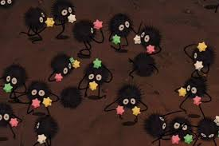

I have a tat of these guys!
A little bit about me
Im a junior from Three Forks Montana majoring in Media Arts! I love art and recently coding has been peaking my artist brain. Coding is something that trufully makes me very nervous, its complicated and tedious. With that being said I am very interesnted in it. I think this medium of art is useful in our tech driven world and I Want to overcome my fear and jump in so hopefully this class is eye opening for me! thanks for reading!
what do I see when I look at the world?
when I look at the world I see intimidation, trufully im scared of facing the world. with
that being said almost everyone ive talked to about this has said to me that they have no idea what they are doing most of the time.
this statement has given me some odd comfort in times where im unsure. but as I get older I see that sometimes I do
actually know, and I lean into those moments.